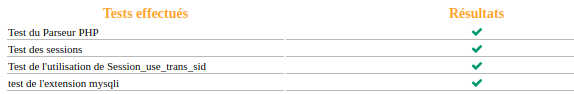
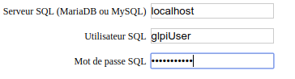
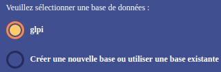

Installation de GLPI
Récupération de l'archive
La dernière version de GLPI est disponible sur le Github. Il est préférable de récupérer l'archive glpi-{version}.tar.bz2. Celle-ci est à déplacer dans le dossier du serveur Apache, à savoir /var/www/, et à extraire.
sudo tar xfvj glpi-9.2.4.tar.bz2
Le dossier compressé peut être supprimé.
sudo rm glpi-9.2.4.tar.bz2
Il convient d'appliquer les droits suivants sur le dossier GLPI :
sudo chown -R www-data:www-data /var/www/glpi.
Configuration du serveur
Il faut maintenant autoriser l'accès au site GLPI auprès du serveur. Pour cela, se placer dans le dossier /etc/apache2/sites-available et copier :
sudo cp 000-default.conf glpi.conf.
Puis lancer une modification :
sudo vim glpi.conf.
Il faudra modifier la ligne
DocumentRoot /var/www/html
par
DocumentRoot /var/www
Il faut alors confirmer le nouveau fichier de configuration et relancer Apache.
sudo a2dissite 000-default.conf
sudo a2ensite glpi.conf
sudo systemctl reload apache2
Configuration via l'interface web
La suite de l'installation de GLPI s'effectue via son interface web. Il faut pour cela se connecter sur localhost/glpi.
Après avoir accepté les conditions générales d'utilisation et choisi d'installer GLPI, les extensions sont affichées. Dans le cas où certaines ne sont pas validées, installer les paquets mentionnés et redémarrer le serveur Apache.

Il faut maintenant se connecter à la base de données grâce aux identifiants créés précédemment.

GLPI va a présent pouvoir se servir de la base de données reliéée à cet utilisateur.

Finir l'installation et, enfin, se connecter à GLPI sous le compte administrateur glpi/glpi.
Pour des raisons de sécurité, il est préférable de supprimer le fichier install.php.
sudo rm -R /var/www/glpi/install/install.php